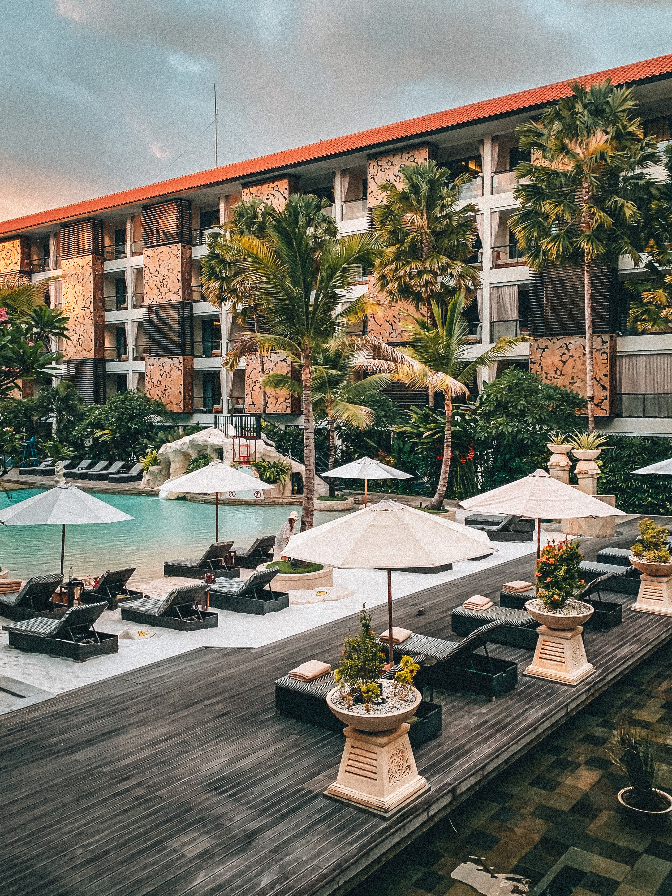

Cool Water and a Slow Pace on Florida’s ‘Spring Runs’
Underground springs create short, clear creeks in the state’s interior, and a paddle board is the perfect way to explore them.
By Susanne Masters

By Carly Caramanna August 26 2023
Thinking about visiting the “Happiest Place on Earth,” Disneyland? There’s always a reason to plan a vacation to this classic California theme park, but deciding on the best time to visit depends on various factors, from the weather to the events on offer. For a general idea of what to expect when, though, keep the following seasons in mind.
High Seasons: Mid-March to July, plus the month of December
Shoulder Season: January to early March
Low Season: August to November
The complexities of a Disneyland vacation range from booking accommodations and travel to navigating Disney Genie+ and dining reservations. Tacking heavy crowds onto that list can burst your magical bubble in no time.
Much like its sister park in Florida, Disneyland draws crowds 365 days a year — but some times are busier than others. No matter when you visit, weekdays should be less crowded than weekends, since both tourists and locals pack the park on days when schools are closed.
Unlike Walt Disney World, Disneyland draws many guests from the region surrounding the park, so the local school schedule can have an outsize impact on crowd size.
With that in mind, fall can be counted on as the park's least busy season. From August (when most California schools start their fall semesters) until November, crowds are typically smaller than at any other time of year — though Disneyland's popular Halloween events can lead to long lines in October. Another off-peak season
to consider is winter. December is one of Disneyland's busiest months, thanks to the park's beloved Christmas and New Year's celebrations,
but from January until spring-break season in March, things tend to be quiet.
Thanks to Disneyland’s location in Southern California, you can expect moderate weather and sunny days year round,
making almost any date a beautiful time to visit. August is typically the hottest month, and guests visiting then should note that there's not much indoor seating in the park, particularly at quick-service restaurants.
To avoid queueing for your favorite ride under the hot sun, try visiting at another time of year.
Temperatures are at their lowest in December and January — typically bottoming out around 60 degrees — but there's often a big difference between day- and
nighttime temperatures at this time of year. It's best to prepare by layering clothing, and maybe by packing an umbrella, too: while SoCal is typically immune from heavy rain, winter is its wettest season.
For a trip that's neither too hot nor too cold (relatively speaking), plan your travel for the spring or fall.
From classic attractions like Pirates of the Caribbean to the recently opened Mickey & Minnie’s Runaway Railway, there’s always something in this theme park to keep families entertained.
If you want a special treat, though, plan your visit for a time when your favorite ride is transformed with a Disneyland-exclusive seasonal overlay. Schedule a trip between September and January to catch perhaps the most iconic overlay of all:
Haunted Mansion Holiday, which has transformed the Haunted Mansion ride with details from Tim Burton's "The Nightmare Before Christmas" for more than 20 years.
The holiday season is another wonderful time for families, thanks to the flurry of festive upgrades that bedeck the park, the on-site hotels, and Downtown Disney.
Be sure to check out It’s a Small World if you visit at this time of year — the ride is blanketed in snowy decor for the winter, and its facade is illuminated each evening with a stunning light display.
If planning for an afternoon pool break is important to your family, California’s summers make for an ideal time to visit. You can find great pool complexes at the Disneyland Hotel and Disney's Grand Californian Hotel & Spa — and,
when you're ready to hit the park, you'll find summer perks there, too. To accommodate its flood of summer-break guests, Disneyland typically stays open longer and later in this season than at any other time.

Underground springs create short, clear creeks in the state’s interior, and a paddle board is the perfect way to explore them.
By Susanne Masters
“That sounds like a baby gator. Did you hear it?” We stopped paddling and listened. Leaves rustled, there was the splash of a turtle sliding into water, and then “pew, pew,” the dainty call of a baby alligator sounding like a video game laser.
We saw the hatchling’s mother hauled out on muddy ground. She watched us pass. Giving due deference we moved away, quietly thrilled by the encounter.
We were standup paddle boarding on Silver Glen Run, in Central Florida, an hour and 15 minutes’ drive north of Orlando. Here, water from the underlying aquifer,
flowing to the surface through caves and rock tunnels, creates “spring runs,” short, clear creeks and rivers that flow into a larger river or lake.

In Florida, navigable waterways are held in public trust, even if the surrounding land is privately owned. Clear water and navigation rights are invitations to explore these riparian pathways, and paddle boards, which combine portability and a quiet approach,
are the perfect vessels for slow travel on them, a way to enjoy wildlife — otters, cormorants, garfish and snapping turtles.
While the waterways are public, access to them is via boat launches on private or state-owned land. Some state parks, such as Weeki Wachee Springs, have limited launching slots, in order to control the number of visitors and protect the habitat,
that need to be booked in advance online. Others, like Silver Glen Spring, are popular and have limited parking, which should be booked in advance to guarantee entry.
Staying in waterfront accommodations is another way to ensure access. Paddling upstream and drifting back to your parking spot removes the need for a shuttle ride back to your vehicle.
Myles, my boyfriend, and I have explored Florida’s springs over many years. This year his 19-year-old daughter, Lili, had free time between studies and internships,
so we brought her to our favorites. We had our inflatable boards, which are lightweight, easy to launch and pack down to check-in size for flights. In a circular route, starting and ending at Orlando, over the course of a week we stayed in three places and paddled on six spring runs.
Our trip took place in the spring, but peak paddle-boarding season runs through October, though it’s possible to do year-round.

The award-winning properties in the Royal Cliff Hotels Group are the ideal backdrop for a family holiday in Pattaya, Thailand
For a holiday filled with indulgence and cultural immersion, it's hard to beat Royal Cliff. The group's four adjoining five-star hotels – Royal Cliff Beach Hotel, Royal Cliff Beach Terrace, Royal Cliff Grand Hotel and Royal Wing Suites and Spa – are all on the same private estate and, though each one is slightly unique in style, they share plenty in common. All benefit from the resort's prime location on 64 acres of private parkland overlooking the Gulf of Thailand's heavenly beaches, a spot unmatched in its tranquillity and beauty. Each draws inspiration from Thai culture and traditions, inviting guests to experience the country's vibrant cuisine, rich history and warm hospitality; and each features the very best amenities, from exciting kids' clubs to pampering spa sessions.
Across the resort, interiors are smart and stylish with a south-east Asian flair. Many rooms have exceptional views of the ocean or mountains and, with a multitude of suite configurations, finding the right space for your group couldn't be simpler. For the full experience, book into the two-bedroom Thai Modern Theme Suite – it's a sleek, modernist dream in pristine white, complete with a Jacuzzi and glass walls opening out to views of the sea.
Everyone is invited to enjoy the magic at this family-friendly spot and children are made to feel especially welcome throughout the resort.
Little ones will love the brightly coloured playroom at the Funtasea kids' club which they will leave with a host of new skills courtesy of an itinerary filled with cooking classes, origami workshops, pottery sessions and balloon modelling.
Meanwhile, fun for all ages can be found at The Verge , featuring the latest games and e-sports on all the latest consoles, including the Playstation5, alongside pool tables, a 3D cinema and a karaoke room.
On a hot day, there's nothing better than a cool down in one of the seven pools – especially the jungle-themed oasis at the Fitz Club sports centre – or splashing about on the slides.
The resort also has a calendar packed with events ranging from tennis tournaments to themed parties to enjoy throughout the year –
and can even host personal celebrations if your child's birthday happens to fall within your stay.
Having children shouldn’t mean your travel life has to end. From flying to eating on the go, here's how to travel with a baby or toddler BY ROSALYN WIKELEY
It’s only once you have mastered the various potholes of travelling with children that they cruelly switch up. Your newborn is suddenly an alert baby, a toddler, a little person carrying their own backpack and strong opinions. I hesitantly solicit tot-friendly travel advice as the variables are just too great, the isms and routines too diverse. Though, having carted my daughter around with me on many travel writing escapades, from Milan to the Maldives, my many mistakes and a handful of victories can hopefully help smooth out just a few of those potholes.
First things first. While it may be relatively unknown, undesirable territory, a baby or child-friendly hotel will make for a genuine holiday. Treading on egg-shells in grown-up restaurants or ferociously scrubbing spilt milk off expensive velvet sofas is not.
As a travel writer, I have taken my daughter into adult-only, cream carpet and silent restaurant territory on more occasions than I’d care to admit. It was work, it was not fun and young children have a talent for sensing when you are on edge and at your most vulnerable.
So opt for a serviced villa (if you can) or a family-friendly hotel that specifically ‘gets’ the baby and toddler minefield or sterilisers and blackout blinds. Some terrific examples include Sani Resorts in Greece, Ikos Andalusia (all-inclusives are an appealing notion for weary parents),
Calcot Spa in the Cotswolds, Carlisle Bay in Antigua, Four Seasons Maldives, Moonfleet Manor in Dorset and Verdura Golf & Spa in Italy. Previous peripatetic impulses will soon fade with broods in tow – island hopping or road trips with babies or toddlers involves hours of packing up clobber and preparing on-the-road meals,
so staying put for at least four days makes for a bona fide holiday.

Unbeknownst to many new parents, prams that fail to fold to a precise measurement will be summoned to the hold by most airlines. This can make boarding and exiting the plane a warmed up nightmare. Babyzen Yoyo are two magic words passed around parent networks like heirlooms.
Designed by Parisians for narrow staircases and old labyrinthine European cities, this pram easily rises to the challenges of travel. It folds down into a flat, hold bag shape that is flung over your shoulder, then bursts out with a flick of a wrist into a fully-formed pram. It’s also the password at check in, in nearly all countries.
‘Yoyo?’ was a question followed by smug nods, then a hand gesturing towards departures – the platform 9 and three quarters of parenthood. Not only is the pram light enough for single parents to do the bus-train-coach-plane dance, the same brand’s car seat can clip onto the pram, ensuring sleeping babies are left undisturbed from the car to the airport,
while ensuring that taxis or coaches without baby seats are not a problem.
With flight times increasingly unreliable, it is prudent to choose the right flight bag and pack as much food, milk powder, nappies and clothing as possible.
I was once caught out after landing at an airport, where we were asked to wait on the plane. The milk formula had run out and two bottles were dirty. I had a changing episode on the Eurostar with spare clothes wedged in a case behind several others and a gruelling three hours of standstill traffic on the A303 with no dummies to hand and a screaming, hungry baby.
I always travel with at least six Little Freddie baby food pouches, five piccolo fruit pouches and clean spoons, as well as Organix snacks and enough formula for two days. The French often use Evian instead of sterilising water for their babies, which can be a good back up if there’s no kettle in sight, or time for boiling water to cool, and you’re desperate.
If you use dummies with your baby, they are an excellent mute button and even help with air pressure on their sore ears when flying. After learning the hard way, I now fly with 5 packs of two, sterilised and ready to roll.

an intriguing adventure through one of Pakistan's most historically tumultuous regions BY SAM DALRYMPLE
We are driving up one of the highest roads in the world, cloaked in shawls. The Karakoram Highway traces the Indus River up the spine of Pakistan, a cultural fissure dividing the Himalayas and the Indic world to the south from the Turkic world to the north.
Along the highway are countless lavishly decorated trucks: psychedelic galleries in motion, embellished with a dizzying array of calligraphy, paintings, stickers and delicately carved wooden panels. Our vehicle is more mundane but practical: a beaten-up Land Cruiser,
driven by the ever-amiable Riaz Ali, who has a habit of finding the most precarious rocky overhangs to perform his prayers.
I have come to Pakistan to visit the remote and icy land that ancient Chinese geographers called “Tibet of the Apricots”. Now known as Gilgit-Baltistan, it is a place of crumbling palaces and Islamic latticework, home to brown bears and snow leopards, where the Persian and Tibetan worlds collide at 8,200 feet.
Every Buddhist town in the Himalayas may use James Hilton’s lost city of Shangri-La as a motif to promote itself, but many Pakistanis claim that it was the author’s visit to the liberal Muslim society of this region that inspired him to write the book in which it appears.
For centuries, deadly mountain passes and the highest concentration of 26,000-foot peaks in the world left Gilgit-Baltistan isolated. Unable to rule it directly, various empires tried to govern the region through local leaders, so that as late as 1936, the Kashmir Times noted that one of the most powerful, the Mir of Hunza, still paid “tribute to four governments: British, Chinese, Russian and Kashmiri”.
The result was an extraordinarily rich cultural landscape, where a range of languages and traditions coexisted alongside one another. But it was a fragile coexistence and, a decade later, when India and Pakistan went to war over Kashmir, Hunza and the other chiefdoms were dragged into the dispute. Ruled by the Maharajas of Kashmir until 1947,
political instability and several high-altitude wars shut off this region to outsiders for decades.
The doors to this lost world have only recently been thrown open once again. I wanted to see it for myself.
We cross the jade-coloured Hunza River and enter a bucolic valley where the crisp air is scented with jasmine blossom. Until the 1970s, Karimabad, Hunza’s capital, was still a medieval walled city, but it has since sprawled into perhaps Pakistan’s only tourist town,
selling carpets, pashmina, and, true to the epithet, 60 types of apricot. Nonetheless, accustomed to the deforested industrial hill stations of India, with their vast real-estate projects and choked roads, Karimabad feels virtually untouched. In all directions, poplar trees rise from terraced fields and timber-framed houses are still more popular than concrete ones.
Towering over the town is Rakaposhi, the 27th tallest mountain in the world.
Hunza is the most literate district in Pakistan, a place where working women are visible in the streets, in contrast with the all-male throngs in other towns. Nowhere is this more visible than Serena Altit Fort Residence, where I am staying.
Precariously perched on a high mountain ridge overlooking the river, Altit Fort is one of the oldest surviving buildings in the Himalayas. Built more than 1,000 years ago, it was restored in the noughties with the help of Ciqam, an all-woman team of carpenters, cooks, surveyors and designers who are fighting for a carbon-neutral future.
Now, the women have transformed the Royal Garden into a fabulous heritage hotel, complete with Penhaligon’s in the bathrooms and a restaurant serving locally sourced organic food. “We aren’t afraid any more,” says Suneila Baig, one of the first singers in Hunza’s Burushaski language. “Who can stop us?”
The Serena chain recently transformed three former palaces into Pakistan’s first heritage hotels.
The new Serena Altit Fort Residence is located at the base of the oldest surviving building in Gilgit-Baltistan, in the heart of the historic Altit Khun village.
It’s possible to stay in the former residence of the Hunza prince or in a cosy hut in the Royal Garden. The KhaBasi Restaurant serves Hunzai cuisine made from organic, locally grown produce, including exquisite chap shoro meat-filled pastries.
The views of the Hunza River are spectacular and the café is managed mostly by women – a first for Pakistan.
The 17th-century Serena Shigar Fort was abandoned for decades until 1999, when restoration transformed it into Pakistan’s original heritage property and set the precedent for reclaiming northern Pakistan’s extraordinary history. It’s built on a massive boulder and its kitchens serve dishes with fresh cherries from its gardens.
The Royal Suite is rich in historical texture, with exquisite woodwork and antique furniture.
The best Tibetan-style mansion in Pakistan is Serena Khaplu Palace, where Balti, Kashmiri and Tibetan aesthetics collide. The palace was built in the 1800s at the request of the Dogra of Kashmir, who had recently conquered the region. Guests can gaze out at snowy peaks and the Shyok gorge while sipping apricot juice and devouring home-cooked Balti noodle soup.
In late summer, the village glints orange with apricots drying on rooftops.
From the essentials to local’s insider tips and new opening

Think you've already done all the things to do in Dubai? Think again. Dubai is pulling out all the stops in 2022, with the delayed Expo 2020 Dubai and the United Arab Emirates’ Golden Jubilee celebrations opening the country's doors to the world that little bit wider. This city continues to dream big, opening new things for visitors to do at a dizzying pace. So escape the year-round sun with a stay in one of the glittering hotels and get busy – these are some of our favourite activities.
The Burj Khalifa is a dazzling sight, its needle-thin, glass-covered exterior shimmering in the desert sun. At 828 metres, it’s the world’s tallest building and is such a Dubai icon that Emirates put a ‘flight attendant’ (actually a skydiver and stuntwoman) at the very top of it in 2021 to announce the UAE’s addition to the UK amber travel list.
You don’t need to go to such heights to enjoy the view, but there are a couple of ways of doing it. Visit the At The Top observation decks, including the vertiginous outdoor terrace on the 148th level, or head to restaurant and lounge Atmosphere on the 122nd level.
Our tip? Save sundowner hour for the beach, and head here for breakfast when you’ll see the city waking up far below.
Avoid the bigger tourist desert camps and head to Sonara for a more intimate evening in the dunes. Cocktails and burrata pizza fresh from the wood-fired oven await on arrival at the sunset lounge, and supper is served in a fairylight-festooned hollow carved out of the dunes.
You can even sandboard your way down to your table. Entertainment includes a whirling dervish, balancing acts and a fire show, but watching the moon rise over the dunes is the most dreamy performance of all.
Get picked up from your door by Range Rover and watch the skyscrapers fade out of focus – within 30 minutes, you’ll be in desert territory. Whether you choose to ride in a vintage Land Rover or stick to your pick up vehicle, there'll be no dune bashing with Platinum Desert Safari; rather a leisurely drive through the beautiful natural landscape with an experienced guide.
As you meander through the private conservation reserve, seek out Dubai's native flora and fauna, from snakes to Arabian oryx, and admire the rolling dunes as you go. Watch the sunset with a falconry show, canapés and sparkling date juice. Just before dark, enjoy a camel ride that leads you to a private cabana where you’ll settle in for an impressive six-course dining experience followed by star gazing.
The whole experience lasts seven hours, before the journey back to your accommodation.
Dubai’s pre-oil fortunes lay largely in the pearl trade. Before cultured pearls were invented in Japan, around 40 to 50 million pearls were exported each year from the waters of the Arabian Gulf.
Partially inspired by this heritage is Deep Dive Dubai, newly opened in summer 2021, housed in a building shaped like an oyster shell and, with a depth of 60 metres,
the deepest diving pool in the world. But this is where the similarities end. The pool is designed as a sunken city filled with dystopian sights, such as an abandoned apartment, arcade games and a tree with far-reaching tangled roots. Beginners can join a Discover Scuba session and explore the shallower sights; advanced divers can head all the way down into the distant depths.

BY Kathleen Benoza
Despite Japan having the world’s most powerful passport, fewer than 20% of Japanese people actually have passports in the first place, according to Japan’s Ministry of Foreign Affairs.For some of these “never travelers,” domestic trips within Japan are enough.
“Many Japanese feel like overseas travel is time-consuming even before they step foot on foreign land, that it takes a lot of time, skill and planning,” says Nakamura.
Hiroo Ishida, 25, a caregiver from Chiba Prefecture and motorcycle enthusiast with a love for Harley Davidson bikes, says this resonates with him.
“I have some desire to go to the US, mostly because in Western media shown in Japan, that’s the place to go to for motorcyclists, but I most likely won’t go because just planning it is an inconvenience. Japan is abundant with destinations that motorcyclists find attractive,” says Ishida.
His last trip abroad was a field trip to Guam in high school; he’s never felt the urge to go overseas since, he adds.
The cost of travel is also a consideration.
The yen is at its weakest in decades, and many Japanese workers haven’t had a raise in 30 years.
Less disposable income means young people may be more inclined to stay at home or explore nearby locations.
“Compared to the older generations, they are less likely to go abroad since they don’t have much money. Besides, many young people find online entertainment or smartphone games more enjoyable than traveling abroad,” explained Toriumi. “Many elderly people would like to travel abroad again after Covid settles down.”
Aki Fukuyama, 87, is a “half-retired” financial executive of a hospitality conglomerate. He has had many golf trips overseas and wishes to go again but cites his health and age as the main reasons why he isn’t likely to make another international trip.
“I frequently went (abroad) until about 15 or 20 years ago,” he said. “It doesn’t help that most of my friends have passed away. I plan on traveling domestically, maybe somewhere close by, if someone invites me.”
Nakamura’s studies show that positive attitudes win over external pressure to refrain from heading abroad, so people that have always liked to travel wouldn’t let social conformity get in the way.
“People who have always had positive views regarding overseas travel try to do so as soon as they get the chance,” says Nakamura. “This is true for both before and after the pandemic. Those we see going abroad now are those people…they can’t wait to go back (abroad).”
Yuma Kase, 25, is a Tokyo-based finance worker who says she loves visiting new countries and interacting with people from different backgrounds.
“Preparing to go to a foreign country is part of the journey and excitement, I feel. Knowing that I have to practice what to say when I get there or do some research about cultural differences is something that I look forward to,” Kase says.
But her love of exploring isn’t genetic. Her mother hates to travel and likes to stick to a fixed daily routine. “The farthest my mother has been to in 2022 was an outlet mall,” laughs Kase.
According to the latest data from the Japan National Tourism Organization, the number of Japanese overseas travelers was down 86.2% in 2022, with around 2.7 million people compared to the 20 million figure in 2019.
“Those who only used to go because it was cheap or don’t particularly like to travel…they are not traveling now,” says Toriumi.